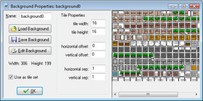

Sometimes you want to use a background as a set of tiles, that is, a collection of smaller images in one big image. When create the rooms you can then add these subimages at different places in the room. This is very useful for creating nice looking levels. To use a background as a tile set, check the box labelled Use as tile set. The form now changes to look as follows:

You can indicate a number of settings for the tile set. In particular you can indicate the width and height of each tile. (Only one size can be given, so better make sure that all tiles in the set have the same size. If you have different sizes, create two or more tile sets.) You can also indicate an offset where the top leftmost tile starts. Finally, a separation between the tiles (this is normally 0 or 1) can be indicated. For more information on using tiles, see the section on Adding Tiles when creating rooms.
A word of warning is required here. When you put separating borders between the sprites and use interpolation between pixels (see the global game settings) this can result in cracks between the tiles. Better make sure the pixels around the tiles actually match with the pixels just inside the tiles to avoid this. You can easily achieve this by editing the background and changing the color of such pixels.
| Converted from CHM to HTML with chm2web Pro 2.85 (unicode) |